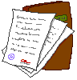

Estoy algo preocupado, desde que mi hermano empezó a vender fentanilo en las calles de Madrid, le he notado bastante más paranóico. Me comenta, seguro que fruto de la paranoia, que «ellos» le persiguen y que le procuran un destino muy malo. Le he insistido para que me cuente quienes son «ellos», pero me dice que no lo sabe muy bien y que no me lo puede contar. Rarete.
Se comentan más cosas sin importancia (...).
